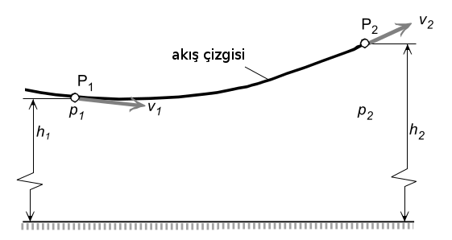
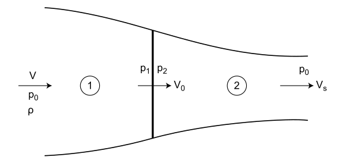

Süreklilik Denklemi
Üstteki gibi bir tüpten hava akışını düşünelim [1]. Tüpün duvarlarında kaçak olmadığına göre tupe birim zamanda giren hava kütlesi aynı zaman biriminde çıkan kütleye eşit olmalıdır. Girişteki açıklığın alanı $A_1$ olsun, birim zaman $\mathrm{d} t$'de akış hızı $v_1$ ise $A_1 v_1 \mathrm{d} t$ hacmindeki hava girecektir, ki bu hacmin kütlesi
$$ \mathrm{d} m = \rho_1 (A_1 v_1 \mathrm{d} t) $$
$\rho$ birim hacmin ağırlığı. Bir diger sekilde
$$ \dot{m} = \rho_1 A_1 v_1 $$
O zaman $\dot{m}$, bir $A_1$ kesitinden birim zamanda giren kütle akışıdır.
Momentum Denklemi
Bilindigi gibi katı bir kütle için Newton'un ikinci hareket kanunu şu şekilde yazılabilir,
$$ F = m \frac{\mathrm{d} V}{\mathrm{d} t} = \frac{\mathrm{d} (mV)}{\mathrm{d} t} $$
ki $m V$ kütlenin momentumudur. Şimdi benzer bir formülü bir tüpteki istikrarlı akış (steady flow) için türeteceğiz.

Hız $V$'nin ve basıncın sabit olduğunu düşünelim. Şimdi $\mathrm{d} s$ uzunluğundaki bir hacme bakarsak, giriş kesit alanı $A$, o zaman kütle $\mathrm{d} m = \rho A \mathrm{d} s$. Hız $v = \mathrm{d} s / \mathrm{d} t$ olarak gösterilebilir, yani
$$ \mathrm{d} F = \mathrm{d} m \frac{\mathrm{d} v}{\mathrm{d} t} = \rho A \mathrm{d} s \frac{\mathrm{d} v}{\mathrm{d} t} = \rho A v \mathrm{d} v = \dot{m} \mathrm{d} v $$
Süreklilik denklemine göre kütle akışı $\dot{m}$ her yerde sabit olduğuna göre resimdeki 1 noktasından 2 noktasına kadar entegral alınca
$$ F = \int \mathrm{d} F = \dot{m} (v_2 - v_1) $$
Bernoulli Denklemi

Kumanda Eden Disk Teorisi (Actuator Disc Theory)
Şimdi bir helikopterde kullanılan üstteki pervanenin yarattığı itişi hesaplamaya uğraşalım. Eğer pervane dönerken helikoptere üstten baksak bir disk görürdük. Şimdi o diske yandan bakalım, bir tek çizgi olarak görülebilir, bu diskin alanı $A_p$ olsun.

Bu diske pervane dönmesi sebebiyle hava üstten girer ve alta doğru basılır. Bu havanın geçtiği bölgeyi kabaca bir tüp olarak görebiliriz, üstte daha büyük altta daha daralan şekilde, bu tüp daha önce işlediğimiz içinden hava akan tüp gibi görülebilir.
Daha basit bir resim üzerinden, ufak notasyon değişimine dikkat,

$W$ ağırlığında, pervane disk alanı $A$ olan bir helikopter için itiş hesabı yapalım [2, sf. 70], bu helikopterin hiçbir yere gitmede asılı (hover) durması için ne kadar güç gerekir?
$$ W = \rho A V_o (V_s-V) = \rho A V_0 V_s $$
çünkü $V=0$ dedik, akış tüpüne giren havanın daha önce hareketsiz olduğunu kabul ediyoruz, $\rho$ hava yoğunluğu.
[devam edecek]
Kaynaklar
[1] Wittenberg, Flight Physics
[2] Carpenter, Aerodynamics for Engineering Students